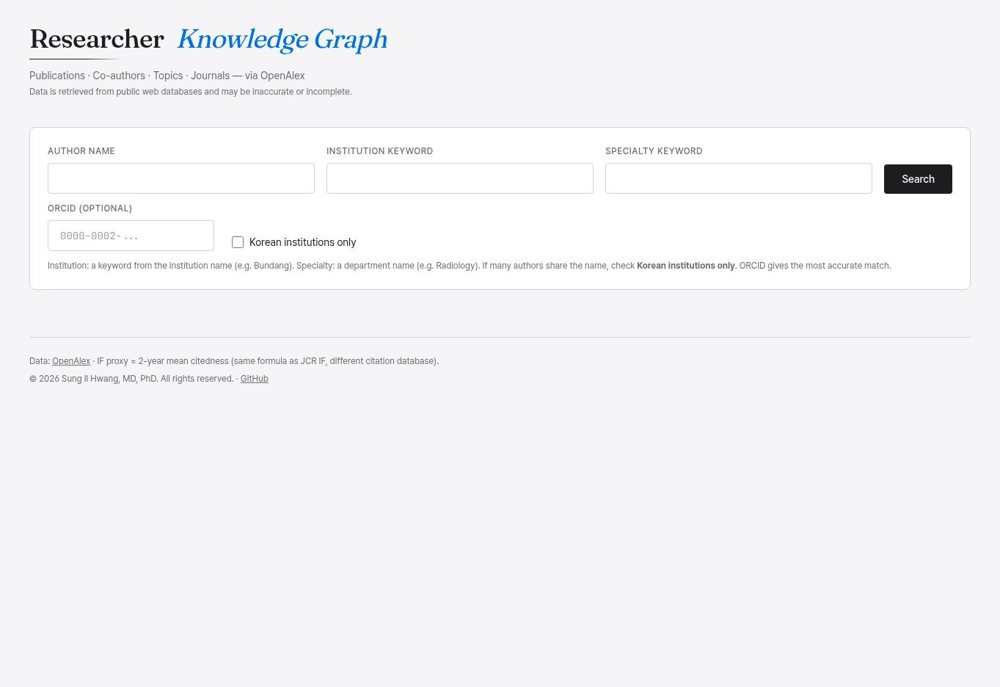
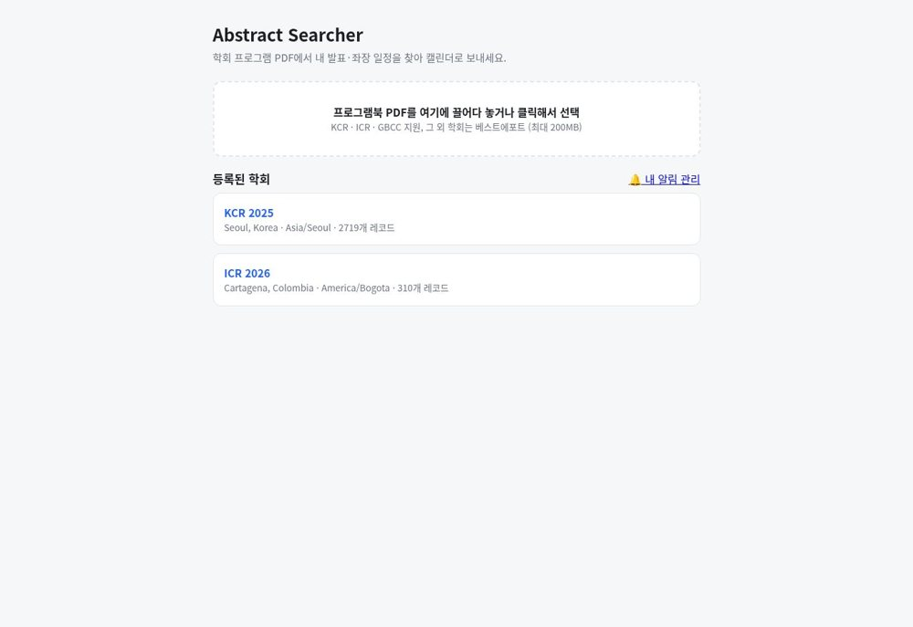
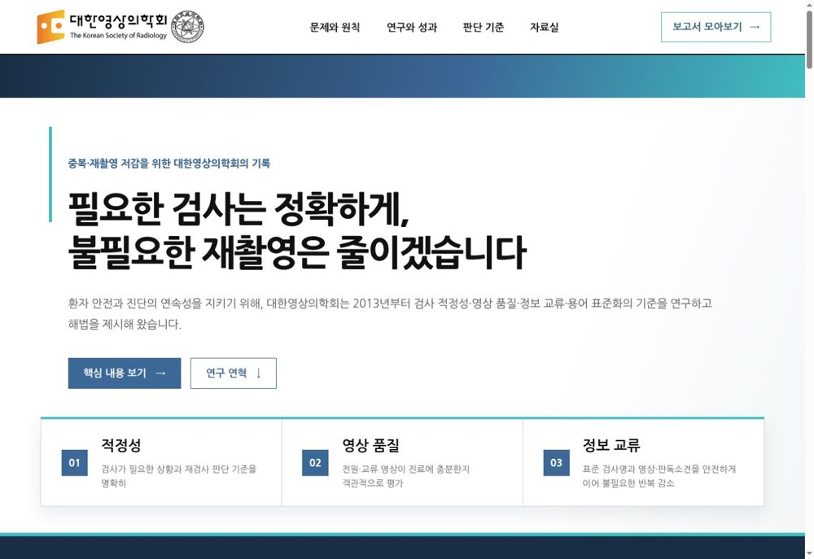
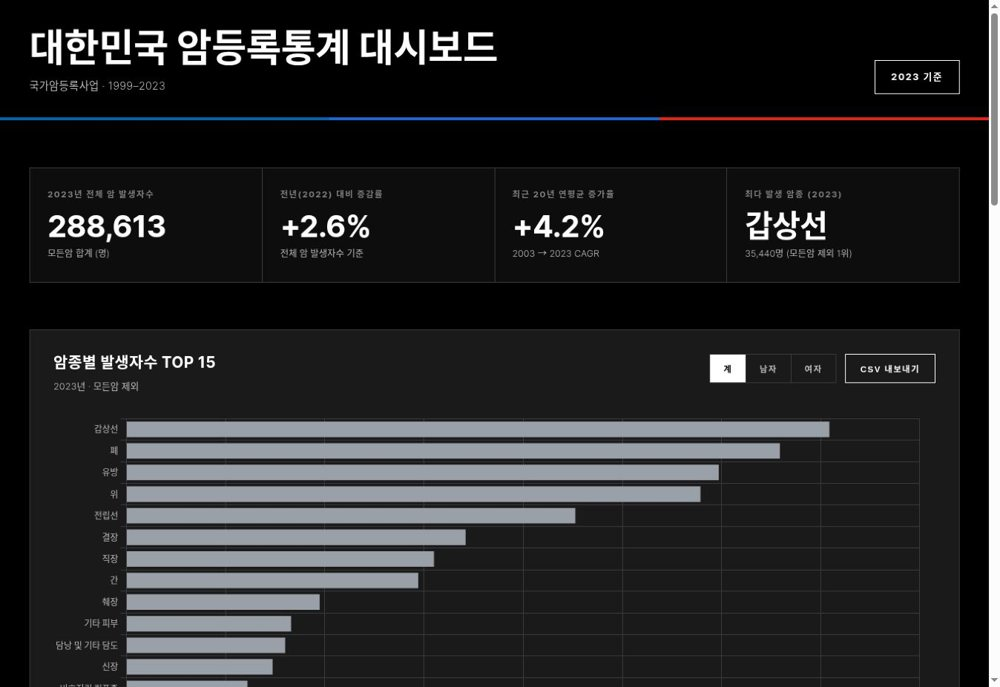

실제 실행 화면
실제 실행 화면01대표 프로젝트
영상의학 도구에서 연구 시각화, 학회와 공공의료까지.
실제 실행 화면PI-RADS v2.1 · 단일 HTML

실제 실행 화면
실제 실행 화면
실제 실행 화면
실제 실행 화면02프로젝트 카탈로그
분야·키워드로 찾아보고, 직접 만든 프로젝트와 Fork를 구분해 보세요.
영상의학·임상직접 만든 프로젝트
HwangViewer
dicom-viewer
강의 자료 제작을 위한 DICOM 뷰어. 다중 패널, 영상 정렬과 확대, 화면 캡처·클립보드 복사를 지원합니다.
Python · PyQt6 · Windows 앱
영상의학·임상직접 만든 프로젝트
전립선 MRI 구조화 판독
PIRADSreport
PI-RADS v2.1 38구역 지도로 병변 위치를 선택하고, 전립선 용적·PSAD와 구조화 보고서를 작성하는 단일 HTML 도구입니다.
HTML · JavaScript · 브라우저 파일
연구·학술직접 만든 프로젝트
Researcher Knowledge Graph
researcher-kg
논문 연혁, 공동연구자 네트워크, 연구 주제의 변화를 OpenAlex·ORCID·PubMed 자료로 탐색합니다.
D3 · Three.js · 웹앱
연구·학술직접 만든 프로젝트
Abstract Searcher
Abstract-searchme
학회 프로그램 PDF에서 이름·소속으로 내 세션을 찾고, 일정 내보내기와 세션 알림을 설정합니다.
Python · PySide6 · Web · 웹·데스크톱
학회·공공의료직접 만든 프로젝트
영상검사 중복·재촬영
ksr_repeat_imaging
영상검사 중복·재촬영에 관한 통계, 연구 자료와 정책 제안을 정리한 대한영상의학회 관련 프로젝트입니다.
HTML · CSS · JavaScript · 웹사이트
학회·공공의료직접 만든 프로젝트
대한민국 암등록통계
CRO_lecture
KOSIS 암등록통계로 암종별 발생, 연도 추이와 성별 차이를 비교하는 대시보드입니다.
JavaScript · Chart.js · 웹 대시보드
영상의학·임상직접 만든 프로젝트
전립선 용적 계산기
ProstateMRICalculator
MRI 영상의 측정값을 기기 내 OCR로 읽고 타원체 공식으로 전립선 용적을 계산하는 Android 앱입니다.
Kotlin · ML Kit · Android 앱
영상의학·임상직접 만든 프로젝트
부신 Chemical Shift MRI 계산기
adrenalMRCalc
동위상·역위상 신호강도로 Signal Intensity Index(SII)를 계산하는 간단한 브라우저 도구입니다.
HTML · 브라우저 파일
영상의학·임상직접 만든 프로젝트
PACS Follow-up
PACSFollowup
PACS 화면 OCR, 음성 입력과 Google Sheets 연동을 활용하는 영상검사 추적 기록용 Android 개발 데모입니다.
Kotlin · ML Kit · Android 데모
연구·학술직접 만든 프로젝트
언론 선정 인재 장기 추적
fame_outcome_followup
과거 언론이 선정한 차세대 리더의 이후 경로를 T+10·T+20 시점과 생애 최고 성과로 나누어 추적하는 연구입니다.
Python · JSON · 연구 데이터
연구·학술Fork
MedSci Skills
medsci-skills
문헌 검색부터 연구 설계, 통계, 논문 작성과 검토까지 의학 연구 과정을 돕는 Claude Code 스킬 모음입니다.
Claude Code Skills · AI 스킬
연구·학술Fork
Reference Verifier
claude-cove-reference-verifier
Chain-of-Verification(CoVe) 방식으로 참고문헌의 오류와 환각을 점검하는 Claude Code 스킬입니다.
Claude Code Skills · AI 스킬
문서·업무 자동화직접 만든 프로젝트
이메일 관리 에이전트
email-agent
Gmail을 AI로 분류하고, 서류 요청의 답장 초안과 iPhone 요약 알림을 만드는 macOS 자동화 도구입니다.
Python · Claude API · macOS 에이전트
문서·업무 자동화직접 만든 프로젝트
병원 통합 예약 에이전트
hospital-agent
국내 주요 병원 정보, 공개 데이터와 예약 흐름을 연결하는 FastAPI 기반 프로토타입입니다.
Python · FastAPI · 서버 프로토타입
학회·공공의료직접 만든 프로젝트
학회 행정 결재 자동화
KSRSapprover
Gmail API와 Telegram 봇을 연결하는 학회 행정 결재 워크플로의 MVP입니다.
Python · FastAPI · 서버 MVP
문서·업무 자동화Fork
kordoc
kordoc
HWP·HWPX·PDF·Office 문서를 읽고 변환하며, 양식 채우기와 문서 비교를 지원하는 CLI·MCP 서버입니다.
CLI · MCP · 문서 도구
문서·업무 자동화Fork
Anything / Docufinder
Docufinder
파일명 대신 문서 본문으로 HWP·PDF·Office 자료를 찾는 로컬 문서 검색기입니다.
Tauri · 로컬 검색 · Windows·macOS 앱
문서·업무 자동화Fork
rhwp — 모두의 한글
rhwp
Rust와 WebAssembly로 만든 HWP·HWPX 뷰어·편집기 프로젝트입니다.
Rust · WebAssembly · 문서 도구
원본: edwardkim/rhwp
문서·업무 자동화Fork
HWP Pipeline
hwp-pipeline
한컴오피스 없이 HWP 문서를 읽고 HWPX로 변환하거나 양식을 편집하는 Claude Code 스킬입니다.
Node.js · Python · Java · AI 스킬
실험·학습직접 만든 프로젝트
Conflict: Korea 리메이크
korea
1992년 DOS 전략 게임을 한국어와 마우스 중심의 웹 인터페이스로 재구현하는 개인 프로젝트입니다.
TypeScript · 게임 프로젝트
실험·학습Fork
Harness
harness_rev
도메인에 맞는 AI 에이전트 팀과 전문 스킬 구성을 설계하는 Claude Code 메타 스킬입니다.
Claude Code Skills · AI 스킬
실험·학습Fork
AI Agents for Beginners
ai-agents-for-beginners
AI 에이전트의 기초와 구현을 단계별로 학습하는 공개 교육 자료입니다.
학습 자료 · 튜토리얼
실험·학습Fork
Awesome Claude Design
awesome-claude-design
AI로 UI를 만들 때 참고할 수 있는 DESIGN.md 형식의 디자인 시스템 모음입니다.
DESIGN.md · 디자인 자료
프로필·사이트직접 만든 프로젝트
GitHub 프로필
hwangsi
Sungil Hwang의 소개와 대표 프로젝트, 분야별 저장소 목록을 담은 프로필 저장소입니다.
Markdown · Next.js · 프로필
프로필·사이트직접 만든 프로젝트
프로젝트 카탈로그
hwangsi.github.io
공개 프로젝트를 분야와 용도에 따라 찾아볼 수 있는 이 웹사이트의 소스 저장소입니다.
HTML · CSS · JavaScript · GitHub Pages
일치하는 프로젝트가 없습니다.
검색어를 바꾸거나 분야·유형 필터를 초기화해 보세요.
이 목록을 읽는 방법
‘직접 만든 프로젝트’는 GitHub에서 Fork로 표시되지 않은 저장소입니다. Fork에는 원본 개발자·저장소 링크를 함께 표시합니다. ‘실행’은 공개 웹앱으로, ‘저장소’는 코드와 설치 안내로 연결됩니다.
공개 프로젝트 기록
2026년 10월 29일의 공개 저장소와 README를 기준으로 정리했습니다. 최근 push 날짜는 개발·검증 완료일을 뜻하지 않습니다. 연구·임상 도구의 사용 범위와 주의사항은 각 저장소의 안내를 확인해 주세요.